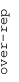
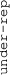

These results are also available as PDF and EPS documents.
Depending on your display resolution, scrolling or zooming may be necessary.
|  |
| 3 |
| 0 |
| -3 |
|  |
| GO:0007156 homophilic cell adhesion via plasma membrane adhesion molecules | |||||||||||
| GO:0051453 regulation of intracellular pH | |||||||||||
| GO:0004714 transmembrane receptor protein tyrosine kinase activity | |||||||||||
| GO:0050919 negative chemotaxis | |||||||||||
| GO:0005044 scavenger receptor activity | |||||||||||
| GO:0008081 phosphoric diester hydrolase activity | |||||||||||
| GO:0007517 muscle organ development | |||||||||||
| GO:0008146 sulfotransferase activity | |||||||||||
| GO:0005267 potassium channel activity | |||||||||||
| GO:0005201 extracellular matrix structural constituent | |||||||||||
| GO:0005528 FK506 binding | |||||||||||
| GO:0045777 positive regulation of blood pressure | |||||||||||
| GO:0042445 hormone metabolic process | |||||||||||
| GO:0030695 GTPase regulator activity | |||||||||||
| GO:0008168 methyltransferase activity | |||||||||||
| GO:0016874 ligase activity | |||||||||||
| GO:0016592 mediator complex | |||||||||||
| GO:1904813 ficolin-1-rich granule lumen | |||||||||||
| GO:0005681 spliceosomal complex | |||||||||||
| GO:0006260 DNA replication | |||||||||||
| GO:0000932 P-body | |||||||||||
| GO:0031305 integral component of mitochondrial inner membrane | |||||||||||
| GO:0042254 ribosome biogenesis | |||||||||||
| GO:0000775 chromosome, centromeric region | |||||||||||
| GO:0070126 mitochondrial translational termination | |||||||||||
| GO:0070469 respiratory chain | |||||||||||
| GO:0006334 nucleosome assembly | |||||||||||
| GO:0031519 PcG protein complex | |||||||||||
| GO:0008022 protein C-terminus binding | |||||||||||
| GO:0006368 transcription elongation from RNA polymerase II promoter | |||||||||||
| GO:0006888 ER to Golgi vesicle-mediated transport | |||||||||||
| GO:0051087 chaperone binding | |||||||||||
| GO:0008080 N-acetyltransferase activity | |||||||||||
| GO:0016180 snRNA processing | |||||||||||
| GO:0000086 G2/M transition of mitotic cell cycle | |||||||||||
| GO:0045454 cell redox homeostasis | |||||||||||
| GO:0007265 Ras protein signal transduction | |||||||||||
| GO:0030659 cytoplasmic vesicle membrane | |||||||||||
| GO:0040008 regulation of growth | |||||||||||
| GO:1990830 cellular response to leukemia inhibitory factor | |||||||||||
| GO:0009791 post-embryonic development | |||||||||||
| GO:0016311 dephosphorylation | |||||||||||
| GO:0006607 NLS-bearing protein import into nucleus | |||||||||||
| GO:0031083 BLOC-1 complex | |||||||||||
| GO:0045089 positive regulation of innate immune response | |||||||||||
| GO:0019882 antigen processing and presentation | |||||||||||
| GO:0007076 mitotic chromosome condensation | |||||||||||
| GO:0007140 male meiotic nuclear division | |||||||||||
| GO:1903955 positive regulation of protein targeting to mitochondrion | |||||||||||
| GO:0030177 positive regulation of Wnt signaling pathway | |||||||||||
| GO:0003841 1-acylglycerol-3-phosphate O-acyltransferase activity | |||||||||||
| GO:0007286 spermatid development | |||||||||||
| GO:0045095 keratin filament | |||||||||||
| GO:0042571 immunoglobulin complex, circulating | |||||||||||
| GO:1903231 mRNA binding involved in posttranscriptional gene silencing | |||||||||||
| GO:0002377 immunoglobulin production | |||||||||||
| GO:0050907 detection of chemical stimulus involved in sensory perception | |||||||||||
| GO:0005549 odorant binding | |||||||||||
| GO:0018149 peptide cross-linking | |||||||||||
| GO:0005753 mitochondrial proton-transporting ATP synthase complex | |||||||||||
| GO:0006413 translational initiation | |||||||||||
| GO:0006622 protein targeting to lysosome | |||||||||||
| GO:0006895 Golgi to endosome transport | |||||||||||
| GO:0003951 NAD+ kinase activity | |||||||||||
| GO:0007005 mitochondrion organization | |||||||||||
| GO:0006914 autophagy | |||||||||||
| GO:0001047 core promoter binding | |||||||||||
| GO:0030027 lamellipodium | |||||||||||
| GO:0005777 peroxisome | |||||||||||
| GO:0006486 protein glycosylation | |||||||||||
| GO:0035579 specific granule membrane | |||||||||||
| GO:0019902 phosphatase binding | |||||||||||
| GO:0004843 thiol-dependent ubiquitin-specific protease activity | |||||||||||
| GO:0031397 negative regulation of protein ubiquitination | |||||||||||
| GO:0005637 nuclear inner membrane | |||||||||||
| GO:0005977 glycogen metabolic process | |||||||||||
| GO:0006611 protein export from nucleus | |||||||||||
| GO:0004177 aminopeptidase activity | |||||||||||
| GO:0006893 Golgi to plasma membrane transport | |||||||||||
| GO:0001682 tRNA 5'-leader removal | |||||||||||
| GO:0080008 Cul4-RING E3 ubiquitin ligase complex | |||||||||||
| GO:0032797 SMN complex | |||||||||||
| GO:0006388 tRNA splicing, via endonucleolytic cleavage and ligation | |||||||||||
| GO:0070588 calcium ion transmembrane transport | |||||||||||
| GO:0051213 dioxygenase activity | |||||||||||
| GO:0016788 hydrolase activity, acting on ester bonds | |||||||||||
| GO:0043123 positive regulation of I-kappaB kinase/NF-kappaB signaling | |||||||||||
| GO:0045747 positive regulation of Notch signaling pathway | |||||||||||
| GO:0042130 negative regulation of T cell proliferation | |||||||||||
| GO:0004896 cytokine receptor activity | |||||||||||
| GO:0004180 carboxypeptidase activity | |||||||||||
| GO:0043395 heparan sulfate proteoglycan binding |